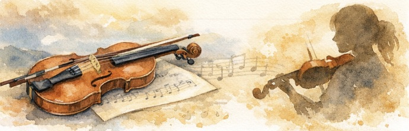

Welcome to ANA Violin Studio
Learn, grow, and enjoy the beauty of music through personalized violin lessons.
Begin Your Musical Journey
Whether you’re just starting or returning to the violin, ANA Violin Studio offers a warm, encouraging environment.
ANA Violin Studio welcomes students of all ages and from beginners taking their very first lessons to advancing musicians seeking to strengthen their technique and artistry.
Whether preparing for auditions, orchestra participation, church performances, special events, or simply learning for personal fulfillment, ANA Violin Studio strives to help each student build confidence, develop healthy technique, and discover the lifelong joy of making music.

About the Owner
Amanda Adams has been playing the violin for more than 30 years and has shared her love of music through teaching for over 20 years. Her experience includes private instruction, sectionals, orchestral performance, church music, weddings, funerals, and a variety of community and professional engagements.
In addition to traditional classical settings, Amanda has enjoyed exploring creative musical opportunities, including performing with a rock band on electric violin and arranging original violin parts to complement contemporary styles.
Amanda began college as a music major before a hand injury sustained during violin practice altered that path. While her professional journey ultimately expanded beyond music, her passion for teaching and guiding students never diminished.
Amanda also holds a Bachelor's degree in Elementary Education, bringing an understanding of child development, diverse learning styles, and effective teaching practices into every lesson.